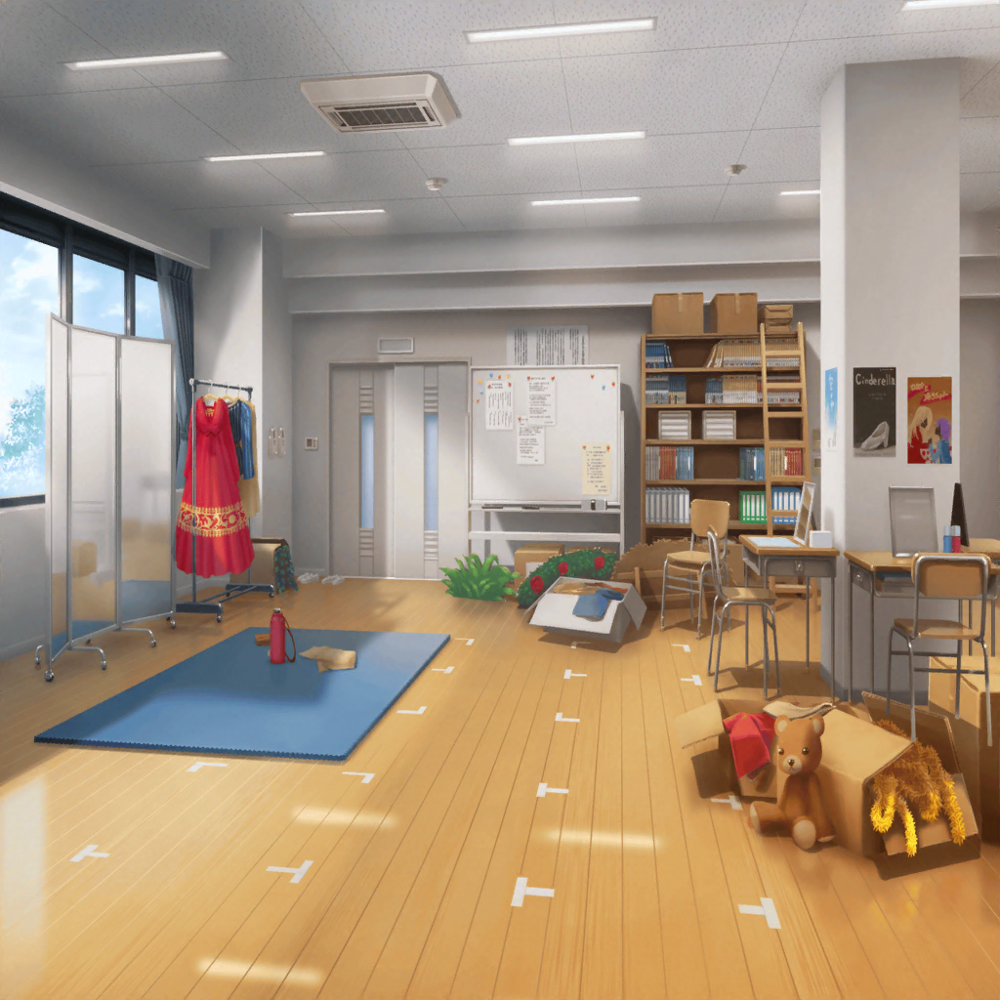

数日後
演劇部部室
千聖
おはようございます。演劇部の練習場所はここでしょうか？
演劇部員A
わあ〜、本物の白鷺千聖だ〜……！
演劇部員B
近くで見ると、超キレイ……やっぱり本物の芸能人は違うな〜
麻弥
千聖さん！
来てくれてありがとうございます！
千聖
いいえ、とんでもない。麻弥ちゃんがいて安心したわ。
みなさん、これからどうぞよろしくお願いします
演劇部員A
有名人なのに全然嫌味な感じがしないね！
演劇部員B
ホントだね！ 実物も素敵〜！
薫
千聖！ 来てくれたんだね！
私のジュリエット！
千聖
……どうも
千聖
まだ、私が出演させてもらうってことしか知らないから、
薫、よかったら詳細を聞かせてもらえるかしら？
薫
ああ、もちろんだよ。
さあ、こちらへどうぞ
薫
フフ……千聖、何度も断られたから正直ダメかと思っていたよ。
本当は最初から、来てくれるつもりだったんだろう？
君は本当に素直じゃないね
千聖
何度も何度も断ったのだけどね。
羽丘の校長先生や、演劇部の方が熱心に交渉に来てくれて……
公演への情熱を感じて、出演を決めたのよ
薫
さすが、君はプロの女優だね。
君のその儚さに……乾杯
千聖
麻弥ちゃん、早速今回の公演について
決まっていることを教えてもらえるかしら
麻弥
はいっ！
千聖
……なるほど。今回は記念の公演なのね。
私も、公演が盛り上がるように精一杯がんばるわね
麻弥
はいっ、よろしくお願いします！ ジブン、照明係として
裏でお二人をしっかり支えますからっ！
演劇部員A
すみません！ さっそくで恐縮なんですが、
台本の読み合わせがあるので参加してもらえますか？
千聖
ええ、ぜひ。行きましょう
薫
『僕は誓う。この美しい月にかけて――』
千聖
『月はいけません。月は、満ちたり欠けたりするもの。
あなたの愛も変わりやすいものになってしまうわ』
薫
『では……何にかけて誓えばいいのかい？』
演劇部員B
すごい、素敵……！
絵になる二人だね
演劇部員C
本当だね……つい見とれちゃう……
薫
『僕は……僕は、あなたの小鳥になりたい――』
麻弥
お二人とも、お疲れ様ですっ！
薫・千聖
お疲れ様
麻弥
お二人とも素敵でしたよ〜！
すでに完成している感じすらありましたよ！
薫
どうもありがとう。それにしても、千聖はさすがだよ。
さきほど台本を受け取ったばかりなのに、あの完成度とはね
千聖
ありがとう。けれど、今のは本読みにすぎない。
完成させるには、もっとジュリエットを知っていかなくちゃ
薫
完成を楽しみにしているよ、私のジュリエット。
それじゃあ私は、個人練習をしてくるよ
麻弥
いやあ、薫さんって本当にすごいですよねえ。
普段はああいう感じなのに、こう……お芝居になると
一気にスイッチが入るっていうか
千聖
薫は天才なのよ。どんな役だろうが、台本を読めばすぐに
その役を自分に降ろすことができる
麻弥
ほへ〜……役を降ろす、ですかあ
千聖
私は薫と真逆。あらゆる資料を読み込み、バックボーンを
理解して、役に近づいていくタイプなの。
……私がジュリエットを理解するにはもう少しかかりそうだわ
千聖
薫はさっき、台本を受け取ってすぐなのに
ジュリエットの完成度が高い、と言っていたでしょ？
麻弥
はい。言ってましたね。ジブンもそう感じました！
千聖
本当はね、薫から演目は聞いていたから、今日を迎えるにあたって
あらゆる『ロミオとジュリエット』を読んだり、見たりしたの
麻弥
そうだったんですか……！
千聖
ええ。だから、ある程度のところまではできていたと思う。
けれどあれは、凡庸な演技でしかない……そう思ってる
千聖
もっと、しっかりジュリエットを理解して、
ジュリエットの人物像を確立させていかないと……
麻弥
がんばってくださいっ！ 千聖さんならきっとできますよっ！
千聖
私なら……
麻弥
あっ……『千聖さんならきっとできる』は禁句でしたね。
すみません……
千聖
ううん、いいのよ。ありがとう、麻弥ちゃん
千聖
私ならできる……そうね。ジュリエットを演じきってみせるわ。
このまま薫の独壇場なんて許せないもの
麻弥
ジブン、応援してますっ。
それに……、千聖さんがこんな話をジブンにしてくれたの、
すごく嬉しいです
千聖
こんな話、って？
麻弥
ああ、えーっとですね、千聖さんがこの役に対して
どんな努力をしているか、とか。どんな思いでこの役と
向き合っているのか……とか、そういう話です！
麻弥
千聖さん、前に『努力はして当然のもの』って言ってましたよね。
だから、誇れるものでもないって
千聖
ええ、今でもそう思っているわ
麻弥
千聖さんは今まで努力してる姿をまわりに見せなかったですよね。
だから、ジブンは千聖さんの完成形しか見たことなかったんです。
今までは、千聖さんが完成する過程を知らなかった
麻弥
バンドの練習も、ある程度できる状態から
自主練に参加でしたから
麻弥
けど、先日の舞台での様子を見たり、
ジュリエット役について悩んでることや
今日を迎えるにあたってしてきた努力を知りました
麻弥
……千聖さんの過程をはじめて知れたんです。
フヘヘ、それが嬉しくって
千聖
麻弥ちゃん……。ふふ、私、少し甘くなってしまったかしら？
麻弥
フヘヘ。でも、ジブン、今の千聖さんすっごく好きです
千聖
ありがとう。
……けど、その『フヘヘ』はやめなさい
麻弥
えへへ、すみません